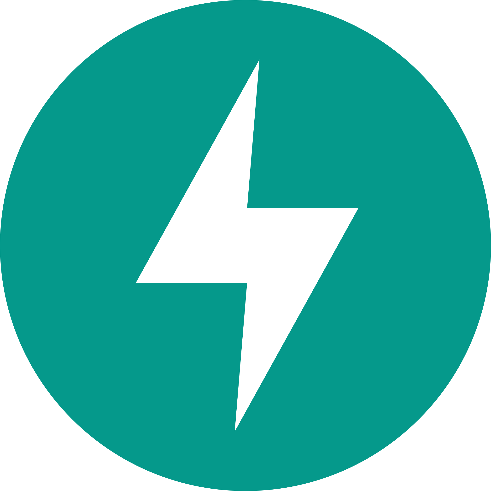

Добро пожаловать на сайт о Python-фреймворках для Web!
Python - один из самых популярных языков для веб-разработки. На нём написаны Instagram, YouTube, Dropbox, Spotify и тысячи других сервисов. Секрет такой популярности - не только в простоте синтаксиса, но и в мощных фреймворках, которые берут на себя рутину: маршрутизацию, работу с базами данных, аутентификацию, обработку форм.
Однако выбор фреймворка - не тривиальная задача. Django, Flask и FastAPI решают разные проблемы и подходят для разных проектов. Этот сайт - попытка разобраться, чем они отличаются, когда какой использовать и с чего начать изучение.
Что такое Python-фреймворк
Фреймворк - это набор готовых инструментов и правил, который задаёт структуру приложения. В отличие от библиотеки, которую вы вызываете сами, фреймворк диктует, как организован ваш код: где описывать маршруты, как подключать базу данных, как обрабатывать запросы.
Python-фреймворки делятся на три большие категории: «тяжёлые» full-stack-решения вроде Django, минималистичные микрофреймворки вроде Flask и асинхронные фреймворки для API вроде FastAPI.
Основные фреймворки

Django
«Батарейки в комплекте». Полноценный full-stack фреймворк с ORM, админкой, аутентификацией и шаблонизатором. Идеален для крупных проектов: интернет-магазинов, CMS, новостных порталов.
Подробнее →Flask
Минимализм и гибкость. Микрофреймворк, который даёт только необходимое, а остальное - на ваш выбор. Отлично подходит для небольших сайтов, прототипов и учебных проектов.
Подробнее →
FastAPI
Асинхронность и скорость. Современный фреймворк для создания API с автоматической документацией и поддержкой типизации Python. Лучший выбор для микросервисов и высоких нагрузок.
Подробнее →Когда что использовать
Выбор фреймворка зависит от задачи. Таблица ниже помогает быстро сориентироваться.
| Фреймворк | Тип | Скорость | Когда использовать |
|---|---|---|---|
| Django | Full-stack | Средняя | Крупные проекты, CMS, интернет-магазины |
| Flask | Микро | Средняя | Небольшие сайты, прототипы, API |
| FastAPI | Асинхронный | Высокая | REST API, микросервисы, высокие нагрузки |